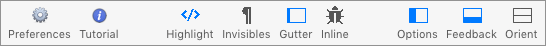

The Toolbar
The default toolbar, below, comes preconfigured for the options that users will use most. This reference describes the functions of all possible toolbar buttons.
For a refresher on how to work with the toolbar and customize it, please consult the toolbar lesson.

Toolbar Button Descriptions
Tidy Options Panel: This toolbar button toggles the visibility of the Tidy Options panel.
Messages Panel: This toolbar button toggles the visibility of the Tidy Messages panel.
Source Orientation: This toolbar button toggles the visibility of the Tidy Messages panel.
Inline Errors: This button toggles “red squiggles” in the Source HTML that indicate the position of detected errors.
Invisible Characters: Pressing this button toggles the visibility of the invisible characters in the source panels.
Syntax Highlighting: You can toggle the use of syntax highlighting on and off with this toolbar button.
Editor Gutter: This toolbar button toggles the visibility of the editors’ line number gutter.
Preferences: This toolbar button opens Balthisar Tidy’s Preferences window.
Quick Tutorial: This toolbar button starts the Quick Tutorial.
Space: This toolbar item is a space that you can insert into the toolbar to help you organize it during customization.
Flexible Space: This toolbar item is a space that you can insert into the toolbar to help you organize it during customization.
Print: This toolbar button will open the Print dialog for the document.
Help: This toolbar button opens the Help file for Balthisar Tidy.